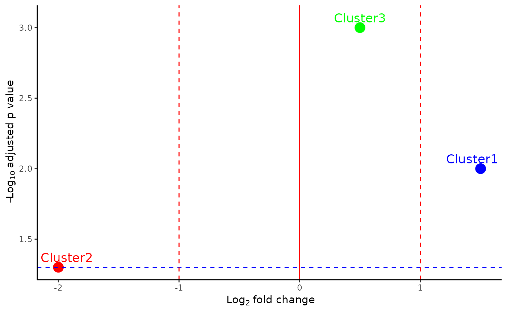

The function creates a volcano plot of the propeller results and saves it
Arguments
- data
A dataframe containing the results from propeller calculation
- color
A vector of colors for the clusters in the plot
- filename
A character representing the file name of the plot
- width
The width of the plot
- height
The height of the plot
- FDR
The FDR threshold for the plot
- dir_output
directory to save the output plot (default: ".")
Examples
propeller_data <- data.frame(
cluster = c("Cluster1", "Cluster2", "Cluster3"),
log2ratio = c(1.5, -2.0, 0.5),
FDR_log = c(-log10(0.01), -log10(0.05), -log10(0.001))
)
color <- c("Cluster1" = "blue", "Cluster2" = "red", "Cluster3" = "green")
plotPropeller(data = propeller_data, color = color, filename = "test_propeller", width = 5, height = 5, FDR = 0.05, dir_output = ".")

unlink("propeller_test_propeller.pdf")